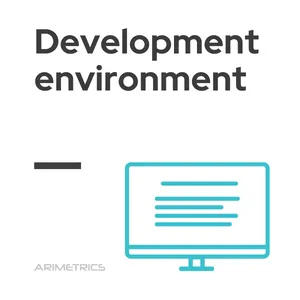

Mi az a fejlesztői környezet (development environment)?

A fejlesztői környezet olyan programozási
eszközök, könyvtárak és beállítások csoportja,
melyekkel a szoftverfejlesztés során a
felhasznált programozási nyelven vagy nyelveken
létrehozott forráskódokat futáskész állapotba
lehet hozni és azt tesztelni.
Ez jelentheti a fordítást, vagy nem önálló
programok futtatási környezetbe helyezését.
Mindkét esetben a környezet általában
tartalmazza a futtatókörnyezetet is a tesztelés
miatt.
A szoftver-, web- és
mobilalkalmazás-fejlesztésben a fejlesztői
környezet olyan munkaterület, amely folyamatokat
és programozási eszközöket tartalmaz , amelyeket
egy alkalmazás vagy szoftvertermék
forráskódjának fejlesztésére használnak .